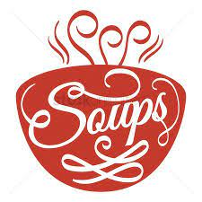
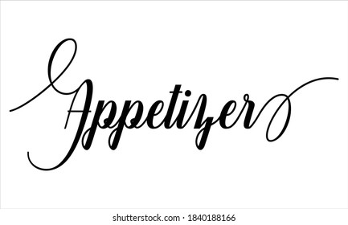

Classic Vegetable or Chicken Dumpling 160 / 210
steamed or pan fried served with irresistible spicy chilli sauce
Corn, Mushroom and Spinach Dumpling 190
an all time loved trio combo, freshly steamed in starch dough wrapper
Sui Mai Chicken 230
a Cantonese open top dim sum with minced chicken and shitake mushroom
Hargow 260
Cantonese chilli Wontons (Veg or Chicken) 190/ 230
steamed and topped with Cantonese Chilli Sauce/ Fried and served with Hot garlic relish

Wonton Soup
with shitake, Chinese cabbage and Pok choy
Vegetable Soup 160
Chicken Soup 190
Corn and Asparagus Soup
with a dash of sweet corn cream and coriander
Vegetable 160
Chicken 190
Prawns 210
Beijing Style Hot and Sour soup
with bean sprouts, tofu, shitake, wood ear and chinkiang vinegar
Vegetable 160
Chicken 190
Soto Ayam 190
an Indonesian chicken soup flavored with fresh turmeric,
and herbs, served with rice vermicelli
boiled egg and potato.
Tom Kha Soup
with straw mushroom, lemongrass, Thai ginger and chillies
Vegetable 170
Chicken 190
Prawns 210
NOODLE SOUPS
Tom Yum Ramen
Thai sour and spicy ramen noodle soup with lemongrass galangal and kaffir lime leaves.
Veg 260
Chicken 290
Prawn 330
Mix 330
Mala Noodle Soup
Stir-fried Mala veg in flavorful broth and noodles.
Veg 260
Chicken 290
Prawn 330
Mix 330

Vegetarian
Honey Siracha Lotus Stem 220
Corn Kernal- Fiery Szechwan pepper / Cantonese Salt and Pepper 220
tossed with Sichuan pepper and chilli flakes
Kecap Chilli Tofu 220
chilli sweet soy
Sweet Potato- Mala Chilli
tossed in dry chilli sauce 220
Non Veg
Kekap Chilli Chicken 290
tossed in chilli sweet soy – a popular Malaysian delicacy
Asian Fried Chicken Wings— with Sriracha Mayo 270
an irresistible fried chicken wings prep
Don Bok Chicken 290
spicy chicken preparation with a hint of black pepper
Fish - Fresh Catch Of The Day 340
Mala Chili / Black Pepper / Honey Siracha
Fiery Sichuan Pepper 290/340/360
Chicken/Fish / Prawns, straight from the Sichuan province of China
Twice Cooked Tenderloin 395
Jumbo Prawns in Thai Roasted Chilli Paste 420
Grill
Sambal Tofu 250
marinated in traditional sambal paste and grilled
Chicken Satay 310
Thai Style chicken skewer flavored with red curry paste and curry powder served with peanut sauce
Mala Sichuan Chicken Skewers 310
minced chicken marinated with Sichuan pepper, chilli and soya
Sambal Fish 340
Fresh catch fish marinated in traditional sambal paste and grilled wrapped in banana leaf
Spicy Garlic and Fresh Chilli Jumbo Prawn Skewers 420
Char Siu Jumbo Prawns 420
Mains
Stir Fry- Asian Greens 260
with light soya
Spicy Braised Tofu and Shitake 260
cotton Tofu and Shitake in Chilli black bean sauce
Kung Pao Tofu and Straw Mushroom 260
Kung Pao Chicken 310
Stir- Fried Chicken in Black bean Sauce 310
Stir Fried Chicken in Black Pepper Sauce 310
Black Pepper Tenderloin 395
Fresh Green Pepper Tenderloin 395
Stir-Fried Tenderloin and fresh chillies and green pepper corn 395
Tofu Ped Mamuang 260
stir-fried cotton tofu, bell peppers and cashew nuts
Curry
Veg/Chicken/Prawn
Thai Red Curry 375/ 410/ 450
Served with Thai jasmine rice
Thai Green Curry
Served with Thai Jasmine rice
Curry Ayam 410
Malay style chicken curry- served with jasmine rice
Pad Graprao - Tofu or Chicken or Tenderloin 320/ 360/420
minced chicken or Tofu with Jasmine rice, mango salad and fried egg.
Singapore Chicken Rice 410
with steamed chicken, pokchoy, broth and sauces
Mapo Tofu- Mushroom or Chicken or Tenderloin 320/390/450
with Jasmine rice and salad
Nasi Goreng 320/ 360/390/390
Indonesian fried rice with chilli, sweet soy, served with satay and kerupuk
Nasi Pad Prik 320/360
Malaysian rice prep with roasted chilli vegetable or chicken, from Thai origin.
Fried Rice
Veg/Chciken/Prawn/Mix
Chow Fan - Fried Rice 210/240/260/260
Thai Chilli Garlic Fried Rice with Holy Basil 225/255/275/275
Szechwan Pepper Fried Rice 225/255/275/275
Egg Fried Rice 235
Veg/Chicken/Prawn/Mix
Freid Kway Teow Mee 290/320/360/360
stir-fried flat rice sticks and noodle with chilli and sweet soya.
Mee Goreng 290/320/360/360
Indonesian noodle stir fried with sweet and savory sauce.
Pan Fried Noodles 300/330/360/360
Light soya sauce
Singapore Rice Noodles 290/320/360/360
with curry powder and fresh chillies
Stir Fried Noodles 210/240/260/260
All time favorite-Hakka style
Bee Hoon Goreng 290/320/360/360
Banana Chocolate Roll 220
Kueh Dadar 220
Coconut crepes